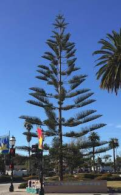
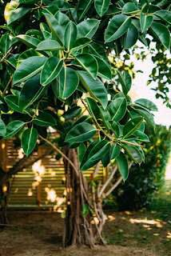

Norfolk Island Pine
Also known as: Star pine, Living Christmas tree, House Pine
Norfolk Island Pine (Araucaria heterophylla) is a conifer tree native to Norfolk Island, a small island in the Pacific Islands. It is a popular houseplant worldwide but is endangered in the wild.
Cabbage Palm

Also known as: Sabal Palm, Swamp Cabbage
Cabbage Palm can grow up to 20m. These trees add a tropical feel and are resistant to high winds and salt, making them ideal for coastal gardens.
Abyssinian Banana

Also known as: Ethiopian Banana, Ensete
The Abyssinian Banana (Ensete ventricosum) is a vital component of Ethiopian food security, with uses ranging from food to fiber and eco-friendly packaging.
Rubber Tree
Also known as: Rubber Fig, Indian Rubber Plant
Rubber Tree (Ficus elastica) is a large ornamental tree with glossy leaves. It can be grown indoors or outdoors in suitable climates.
Weeping Fig

Also known as: Benjamin Fig, Benjamina Ficus
Weeping fig (Ficus benjamina) is an evergreen tree native to Asia and Australia. It is a popular houseplant known for its elegant, glossy leaves. However, it can cause allergies and its parts are poisonous except for the fruit.